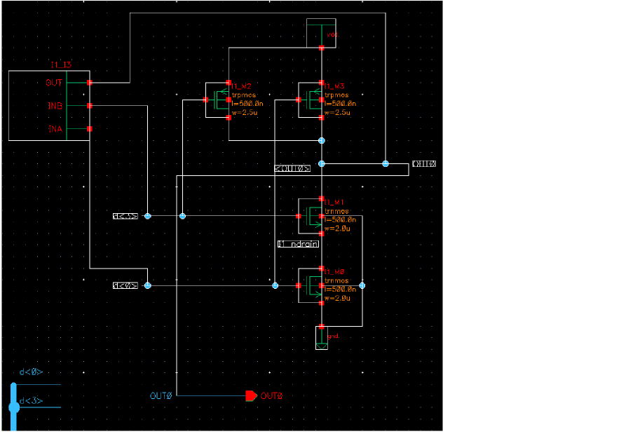
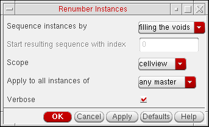

3
Creating Schematics
This chapter provides information about creating a schematic.
- Getting Started with Schematics
- Adding Instances
- Adding Blocks
- Adding Pins
- Adding Wires
- Adding Wire Names
- Adding Net Expression Labels to Create an Inherited Connection
- Adding netSet Properties to Create an Inherited Connection
- Analyzing Net Expression Property Names and Evaluated Names
- Adding Solder Dots
- Adding Note Text
- Adding Patch Cords Using the Add Instances Form
- Adding Patch Cords Using the Create Patchcord Form
- Adding Probes
- Creating a Mapping Schematic
Getting Started with Schematics
One of the best ways to begin a schematic in an empty window is by adding objects in a certain order, as indicated below:

Adding Instances
You can add instances to your design using several methods with different options.
- What Is an Instance?
- Methods of Adding an Instance to Your Design
- Adding Instances One by One
- Adding Instances by Rows and Columns (an Array)
- Adding Instances Using an Iterative Expression
- Changing the Default Instance Name Prefix
- Editing Instance Masters
- Specifying the View to Use While Placing the Instance
- Changing the View after an Instance Is Already Placed
- Renumbering Instances
- Magnifying and Rotating Instances Using the symbol_xform View
What Is an Instance?
An instance is a database object that represents a master symbol cellview. When you add an instance to your design, you create a reference to the master symbol from a reference library.
You can have several instances of the same master symbol cellview in a design, but the instance name must be different. For example, the nand3 gate is a master symbol stored in the Cadence® sample library. Each time you add a nand3 gate to your design, you add an instance of the nand3 master. The instance names can be I1, I2, I3, and so on.
Methods of Adding an Instance to Your Design
Adding Instances One by One
The Create – Instance command lets you place multiple copies of a single instance in a schematic, based on a single lib/cell/view name.
To add instances singly in your design window,
-
From the schematic window, choose Create – Instance.
The Add Instance form appears.This form contains the Library, Cell, and View text fields, which can be auto-completed. When you type the characters, the drop-down list shows the names containing the matching characters at any position in the name (beginning, middle, or end of the name). The non-editable fields appear as disabled. Any incorrect input for a field highlights the same. Select from the drop-down list and specify the name in the text field. The drop-down list is retrieved fromcds.lib. The fields are highlighted in magenta if there are no matching library or cell or view names for the characters mentioned in the field.A thumbnail will also be displayed if there is one available for the current cellview. For more information on the generation and use of thumbnails see Thumbnail View Functions in the Cadence User Interface SKILL Reference in the first instance. -
In the Library, Cell, and View fields, specify the cellview of the instance.
You can also click the Browse button to assist you in finding the cellview you want to add.
You can designate the Browse button to open either the Component Browser or the Library Browser. If the cell you want does not exist, you need to create it using the symbol editor.
If you do not add component/instance names in the Names field, default instance names prefixed with the letterIare generated. -
Choose whether or not to Add Wire Stubs at either all terminals or for registered terminals only.
Clicking on the Browse (...) button will display the Net Name Registration form.
For more information on this option, see Registering Terminals for Use With Add Wire Stubs. -
Move the pointer into your cellview.
The instance appears attached to the pointer. -
Click in your cellview to place the instance.
The Create – Instance command is repeatable (if repeat command mode is turned on) and continues to prompt you to add another instance. To stop generating instances, press theEsckey or choose another command.
Adding Wire Stubs
In the Add Instance you can choose to Add Wire Stubs at: either
-
all terminals
Selecting this option will create wire stubs for all terminals in the cellview.
or -
registered terminals only (see also Registering Terminals for use with Add Wire Stubs and Registering Default Net Names)
Selecting this option will create wire stubs only for those terminals that are registered with a net. This is the default option.
To select one of the above options, ensure that the Add Wire Stubs at: check box is first activated.
Choosing to add a wire stub, to one or more terminals, creates a wire stub that is orthogonal to the edge of the selection box for all terminals, or only those that have been
Figure 3-1 Adding Wire Stubs for Terminals in the Add Instance Form
If you have chosen to add wire stubs to an instance, the instance drag image on placement will preview the instance terminals that are connected to the wire stubs.
Figure 3-2 Registered Terminal Connected to Wire Stub with the Net “vss!”
Registering Terminals for Use With Add Wire Stubs
To register terminals for use with the
-
Select the ... (net name registration) option to display the Net Name Registration form.
Figure 3-3 Net Name Registration for Adding Wire Stubs
The Net Name Registration form displays terminals (in the Terminal Name column) and if there is a Default Net Name registered to them.
From here, you can change the default net name. -
Double-click the Default Net Name column of the instance whose terminal that is to be updated, and enter the new default net name.
Figure 3-4 The Net Name Registration Form -
Click the OK button after you have finished updating the Default Net Name for one or more terminals.
The chosen terminals will now be registered for use with the Add Wire Stubs option.
Adding Instances by Rows and Columns (an Array)
To add an array of a single instance using rows and columns,
-
From the schematic window, choose Create – Instance.
The Add Instance form appears. -
In the Library, Cell, and View fields, specify the cellview of the instance.
You can also click the Browse button to assist you in finding the cellview you want to add.
If you do not add instance names in the Names field, default instance names prefixed with the letter I are generated. - Fill in the Rows and Columns fields.
-
Move the pointer into your cellview.
The first instance appears, attached to the pointer. -
Click to place the first instance.
-
Drag the mouse vertically and click a location for the first instance of the second row.
The rest of the instances follow the cursor.
-
Drag the mouse horizontally and click a location of the first instance of the second column. The rest of the instances follow the cursor.
The Create – Instance command is repeatable and continues to prompt you to add another instance. To stop generating instances, press theEsckey or choose another command.
Adding Instances Using an Iterative Expression
Instance iteration is a compact way of displaying repeated instances of a symbol in your schematic. It is particularly useful in bus-type or data-flow architectures that have identical structures to handle each bit on the bus.
To save space in your design window when you need to add several instances of the same type, you can express multiple unique names with an iterative expression. For example, A<0:3> generates one graphic representing four instances: A0, A1, A2, and A3.
Using iterated instances not only saves space in your design, it makes your design easier to read.
To add instances using an iterative expression:
-
From the schematic window, choose Create – Instance.
The Instance Form appears. - In the Names field, type a name using iterative expression format.
The following schematic shows four instances: I0, I1, I2, and I3. Compare this schematic with the following schematic showing iterated instances:
The following schematic shows one latch iterated four times: I<0:3>. Compare this schematic with the previous schematic showing four individual instances.

Flattening an Instance
Using the Flatten command, you can bring an instance up to the current hierarchy level, thereby enabling editing while preserving the connectivity of the flattened instance.
- In Virtuoso Schematic Editor XL, choose Edit – Hierarchy – Flatten.
-
Click the instance to be flattened.
The outline of the flattened instance appears.
-
(Optional) Press the F3 key to display the Flatten form.
The Flatten form appears.
- (Optional) Edit the source by changing the View field.
- Specify the connection mode by using the Connect Mode drop-down list.
-
Select or deselect the Create symbol notes check box which creates a symbol note and a note line. Below is an example when the check box is deselected:
 - Click Hide.
-
Click on the canvas to place the flattened instance.
The flattened instance is placed on the canvas. When a flattened instance is placed on the canvas it can be interacted with as normal, that is, all its connectivity is intact, cross-probing is working, and so on.
Changing the Default Instance Name Prefix
Each instance requires a unique name. If you do not specify instance names on the Add Instance form, the schematic editor generates unique names automatically. The prefix is a symbol cellview property, not an instance object property.
To change the default instance name prefix from I to a prefix that you designate:
- From the CIW, open a symbol cellview.
-
Choose Edit – Properties – Cellview.
The Edit Cellview Properties form appears. - Show the system properties on the form by choosing system.
-
Change the instNamePrefix property.
You can use more than one character. -
Click OK.
When you place new instances of this same symbol in the same cellview, the new prefix name appears.
Editing Instance Masters
To edit the master of an instance and automatically change all occurrences of the instance,
- From the CIW, open a symbol cellview.
-
Select the part of the symbol you want to edit.
You might want to select the shape, the pin, the label, or the selection box. -
Choose Edit – Properties – Objects to edit the symbol.
The Edit Objects Properties form appears.
To edit a single instance, you edit object properties, not cellview properties. The schematic editor changes all cellviews containing instances of this master.
Specifying the View to Use While Placing the Instance
To change instance views (for example, from a nand2 symbol view to a nand2 symbolNeg view) as you add an instance,
- From the schematic window, choose Create – Instance.
-
Before placing the instance, press the
Shiftkey and click to toggle through the symbol views.
The following diagram shows an instance changing views fromnand2symbol tonand2symbolNeg.
- Place the instance.
Changing the View after an Instance Is Already Placed
To change instance views (for example, from a nand2 symbol view to a nand2 symbolNeg view) after you have added an instance,
- From the schematic window, select the instance you want to change.
- Choose Edit – Alternate View.
Renumbering Instances
If you deleted several instances in your cellview, you might want to renumber the instances to make the numbers consecutive.
-
From the schematic window, choose Edit – Renumber Instances.
The Renumber Instances form appears.
Only the instance names that match with the instNamePrefix property are renumbered.
Mapping of the former and new instance names appears in the (CIW). - In the Sequence instances by cyclic field, choose how you want the instances renumbered.
-
In the Start resulting sequence with index field, type the number you want the renumbering to start with.
- In the Scope cyclic field, do one of the following:
- In the Apply to all instances of cyclic field, do one of the following:
- Click OK.
How Filling the Void Works When Renumbering Instances
When you invoke the renumber instances command (Edit – Renumber Instances), the schematic editing tool processes all the scalar instances. For each instance in the list, starting with the instance that has the highest index, each instance is renamed to use the lowest available index. This in known as filling the voids, and is an option in Sequence instances by field in the Renumber Instances form.
When performing this task, the following rules are taken into account:
- All scalar instances are considered.
- All user named instances, whose names are not in the same format as the system generated instance names, are ignored.
The following examples explain how the filling the voids algorithm works:
Consider a schematic with instances I0, I3, and I5, where the master of the instantiated symbols have the prefix “I”, you would get the following output:
Details: The instance I5 is renamed as I1, and instance I3 is renamed as I2.
Consider a schematic, with instances from different master symbols, which have the prefix names as “A”, “B”, “C” and “I”. With this, there are instances with names A1, A10, B2, B5, B9, C20, C50, I13, and I100.
Renumber Output: A1, A0, B2, B1, B0, C1, C0, I1, I0
Details: The instance A10 is renamed A0, the instances B9 and B5 are renamed B0 and B1 respectively, the instances C50 and C20 are renamed C0 and C1 respectively, and I100 and I13 are renamed as I0 and I1 respectively.
Consider a symbol with the prefix “A”. Also suppose that you have a schematic with instances A20, A30, A40, and A50, which are instantiated from that symbol. After the creation of the schematic, assume now that you update the prefix for the “A” symbol to be “Y”.
Renumber Output: A20, A30, A40, and A50.
Details: Even with the symbol update, there is no change to the instances.
Magnifying and Rotating Instances Using the symbol_xform View
To magnify or rotate instances on the schematic using the symbol_xform view, do the following:
-
Place the
symbol_xformview of the instance on the schematic. -
Select the instances that you want to magnify or rotate.
-
To magnify the selected instances, type the following in the CIW and press
Enter:car(geGetSelSet())~>mag=2.0
Wheremag=2.0indicates that the selected instances will be displayed at twice their default size on the schematic. -
To rotate the selected instances, type the following in the CIW and press
Enter:car(geGetSelSet())~>angle=45
Whereangle=45indicates that the selected instances will be displayed at an angle of 45 degrees on the schematic.
-
To magnify the selected instances, type the following in the CIW and press
Adding Blocks
You can use blocks when you design with a top-down methodology. Blocks let you create a symbol from the context of a higher-level schematic.
You create a block to represent a lower-level cell. As you develop the logic of your higher-level schematic, you can add wires to the block, which automatically creates block pins. After you name the wires, you can rename the block pins so they inherit the connected signal names. You can automatically generate other views (for example, a schematic, VHDL, or Verilog® representation) for the lower-level block cell.
- Adding a Lower-Level Cell Block
- Adding Wires and Pins to Blocks
- Changing the Block Pin Direction Rule
- Changing the Direction or Name of a Single Block Pin
- Changing the Names and Directions of Multiple Block Pins
- Deleting Block Pins
- Disabling Automatic Block Pin Creation
Adding a Lower-Level Cell Block
Unlike adding multiple copies of a single instance in a schematic based on a single lib/cell/view name, the Create – Block command lets you create multiple blocks, each with a different lib/cell/view name.
-
From the schematic window, choose Create – Block.
The Create Block form appears.
-
In the Library, Cells, and View fields, specify the path to the block cellview.
The specified cellview cannot already exist in the library. Only one name (instance) can be entered for each cell. There is a one-to-one correspondence between the entries in the Cells and the Names fields. You can specify multiple cell names by using a space to separate each name. The Cells and Names fields must match in number. If there are more entries in Cells than in Names, the schematic editor assigns a name for each. If there are more entries in Names than in Cells, the extra names are ignored. -
In the Names field, type instance names using a space as a separator.
The schematic editor generates unique names for you if you leave the field blank. -
In the Pin Name Prefix field, type a new prefix name for the pin or leave the default as
pin.
Later, when you add block pins, the system adds numbers sequentially to the prefix name; for example,pin1,pin2,pin3, and so forth. -
Choose a block from the Block Shape pull-down.
The freeform option lets you create a rectangular block of any size by entering opposite corners of the rectangle.
-
Move the pointer into your design.
The block symbol is attached to the pointer unless you chose freeform. You can toggle the block shape before you place it by pressing the right mouse button until you reach the shape you want. -
Click to place the block in your design.
As you place a block, the system creates the specified block cellview and an instance of that block appears in your schematic.
Adding Wires and Pins to Blocks
For general information, see Adding Narrow or Wide Wires.
When you add a wire that touches the edge of a block, the schematic editor automatically creates a block pin attached to the wire.
- From the schematic window, choose Create – Wire.
-
Click to indicate wire segment endpoints.
You can either start a wire or end a wire along the edge of a block. The system creates a pin where the wire touches the block edge. The pin name is constructed from the pin name prefix and a unique sequence number. The pin direction depends on the block pin direction rule.

Changing the Block Pin Direction Rule
When the block pin direction rule is set to edge,
- Any pin created on the left side of the block becomes an input pin
- Any pin created on the right side of the block becomes an output pin
-
Any pin created on the top or bottom side of the block becomes an inputOutput pin
When the block pin direction rule is set to order of entry, one of the following applies:
- Ending the wire on the edge of the block creates an input pin
-
Starting the wire on the edge of the block creates an output pin
To set the block pin direction rule for new block pins to edge or order of entry,
-
From the view, choose Options – Editor.
The Editor Options form appears.
- Select the Block Pin Direction Rule option you want.
- Click OK.
Changing the Direction or Name of a Single Block Pin
To change the direction or name property of a pin,
- From the view, select the block pin only.
-
Choose Edit – Properties – Objects.
The Edit Object Properties – Instance and Block form appears.
- Change the pin’s Name or Direction properties.
- Click OK.
Changing the Names and Directions of Multiple Block Pins
To change the name and direction of multiple block pins,
- From the view, select the block.
-
Choose Edit – Properties – Objects.
The Edit Object Properties – Instance and Block form appears. -
In the Show field, turn on the system button. The form expands.
- Do one of the following:
- Click OK.
Deleting Block Pins
To delete a block pin after you create it,
- From the schematic window, select the block.
-
Choose either Edit – Hierarchy – Descend Edit or Edit – Hierarchy – Edit In Place.
The symbol editor opens. - Select the pin to be removed.
- Choose Edit – Delete.
- Save your design.
Disabling Automatic Block Pin Creation
To disable automatic block pin creation,
- From the schematic window, select a block.
-
Choose Edit – Properties – Objects.
The Edit Object Properties – Instance and Block form appears. -
In the Show field, turn on the system button.
The form expands. - Turn on the FreezePinCreate button.
-
Click OK.
Adding Pins
This section describes the following procedures:
Pins represent the schematic input, output, and inputOutput terminals to which a net connects in a schematic.
You add pins to establish connectivity between different levels of hierarchy and to connect different sheets of a multisheet schematic. For more information, see Connectivity and Naming Conventions.
Hierarchical pins (schematic pins) connect signals that span different
Cadence has a large set of pin definitions in the cell category PINS of the basic reference library. These are the pins that the system uses when you choose Create – Pin.
The following pins are examples of pins in the basic reference library.
Adding Schematic and Offsheet Pins
To add a
-
From the schematic window, choose Create – Pin.
The Create Pin – Schematic form appears.
-
In the Pin Names field, type a pin name or multiple pin names separated by spaces.
Use the same naming conventions for pins as for wires. Use a vector expression to name bus pins.To create a pin with pwr or gnd sensitivity, the pin name should be a single-bit terminal or single-bit terminal with vector elements. If the name is not a single-bit, a signal type can only be added if the Expand Busses option is also selected which will apply to the array of pins. For more details, see Supply and Ground Sensitivity. -
(Optional) To add a net expression to a schematic pin,For more information, see The Syntax of an Inherited Net Expression.
- Select the Attach to pin check box in the Net Expression section.
- In the Property Name field, type a property name.
- In the Default Net Name field, type the name of a global signal.
- In the Font section, specify the height for the label in the Height field (see Entering Font Height Settings).
- Specify the font style for the label using the Style drop-down list.
- Select the options from the Justification drop-down list to describe the type of pin.
- Select or deselect the Expand busses check box.
- Select schematic for a schematic pin or offsheet to connect the pin to another sheet in a multisheet schematic from the Usage drop-down list.
- Select or deselect Place multiple pins check box.
-
Move the cursor into the schematic.
The net expression label is attached to the cursor. -
Click to place the label.
The default net expression displays an asterisk (*) after the net expression label to distinguish it from a regular wire name.
Entering Font Height Settings
The Height label field is set in user units (UU), with a default setting of 0.0625.
The lowest value that a label height can be set at is the inverse of the DBUPerUU (database units per user units) value, as defined in a library’s properties. As the DBUPerUU for a schematic is set at 160, 0.00625 (the inverse of 160) is the lowest value that can be set.
Values entered as label heights are also rounded to the nearest resolution value (1/DBUPerUU). For example, 0.003125 (which is half of 0.00625) will be rounded up to 0.00625, but 0.003124 would be rounded down to 0 (zero).
Defining Signal Types
The signal type (sigType) attribute helps in identifying the particular type of net in the design flow. It is important in the areas of design verification, low power, consistency checking for mixed-signal designs, and setting routing constraints. When you define signal type for a pin or wire, the Signal Type property is set for that specific pin or net. The default signal type of a net is signal. For example, each net has a Signal Type property and the property is set to power or ground to identify the net as a power net or a ground net, respectively. Therefore, while generating the logical Verilog netlist, these nets are treated as supply nets.
You need to define signal types in the Create Pin – Schematic, Edit Object Properties – Pin, Edit Object Properties – Wire Segment, and Schematic Rules Checks Setup.
The following table describes various types of signals:
|
The signal types used to reset the given conditions or settings in a design. |
|
|
The signal type associated with the tieHi (resolve to 1’b1) nets in a block. |
|
|
The signal type associated with the tieLo (resolve to 1’b0) nets in a block. |
|
|
The signal type associated with either the tieHi or tieLo signals. |
|
|
The signal type associated with a general optical connection. For more details, see |
|
|
The signal type associated with a single mode optical connection. |
|
|
The signal type associated with a multi mode optical connection. |
a,b,c and x,z,b are explicit nets. Net b is an implicit net as it is not named directly within the design; it is implied by the existence of the net bundles a,b,c and x,z,b. The explicit net determines the signal type.
When multiple explicit nets that share an implicit net have conflicting signal types, the implicit net might be associated with a randomly selected signal type. In such a situation, to ensure consistent signal results from connectivity updates, create the implicit net as a tap. For details on creating a tap, see Tapping Wire Intersections by Name.Related topics
Showing Pin Connections
To enable the display option for highlighting the connection between pins,
-
From the view, choose Options – Display.
The Display Options form appears. - Turn the Show Direct Connections option on.
-
Click OK.
Adding Wires
A wire is a line that connects a pin and an instance or a line that intersects another wire. When you draw a wire between a pin and an instance, you create a net.
- Adding Narrow or Wide Wires
- Using Wire Snap and Gravity Options
- Using Wire Draw, Width, and Route Options
- Using Wire Flight Lines Option
- Routing Flight Lines
- Manipulating Wires with Only the Mouse
- Adding Wires to Schematic Instance Pins Using SKILL
Adding Narrow or Wide Wires
-
From the schematic window, choose Create– Wire (narrow) or Create – Wire (wide).
You create buses by naming the wire using a specific notation. - Click the wire starting point (for example, at a pin).
-
Click again for each wire segment.
As you move the pointer, a small diamond shape appears over the connection object closest to the pointer. The diamond jumps from one connection object to another as you move the pointer around the design window. -
To end the wire, do one of the following:
- Click a schematic pin, an instance pin, or another wire or double-click a new wire endpoint.
-
Press
sto snap to the nearest object that shows a diamond shape.Switching the Wire Snapping option on from the Editor Options form lets you use theskey to quickly complete a wire drawing action. When wire snapping is enabled, the system highlights an unconnected pin in the design when you move the cursor near the pin.To create a wire from an instance pin, use the pop-up menu or object direct manipulation.
Using Wire Snap and Gravity Options
To turn the wire snap or gravity option on or off,
-
From the schematic window, choose Options – Editor.
The Editor Options form appears. - Turn the Wire Snapping or Gravity field on or off.
Using Wire Draw, Width, and Route Options
To change wire draw, width, and route options,
-
From the schematic window, choose Create – Wire (narrow or wide).
The Add Wire form appears. If the form does not appear, pressF3.
-
Change the Draw Mode, Width, Color, Line Style, and Route Method options as follows:
- The full or direct routing method cannot complete the connection wire. In this case, use a draw mode other than route to manually enter the wire.
- The selection area boxes around two instances overlap each other and the full or direct wire connection cannot be made. In this case, move the instances apart to make room for the wire to pass through.
Using Wire Flight Lines Option
You might find it easier to use flight lines (dotted lines) while you are initially creating a schematic so that you will have more space to add instances. You use a flight line to show an intended logic connection. After all the instances are in place, you can let the schematic editor route the wires for you automatically to establish a physical connection represented by solid wires.
To draw flight lines to indicate an intended connection,
-
From the schematic window, choose Create – Wire.
The Add Wire form appears. If the form does not appear, pressF3. - Set Draw Mode to route.
- Set Route Method to flight.
-
Draw a direct line between two objects.
Routing Flight Lines
To convert wires to normal wires after adding them using the flight route method on the Add Wire form,
- From the schematic window, choose Edit – Route Flight.
-
Click a flight line to route.
The schematic editor routes the logical connections.
-
From the schematic window, choose Edit – Route Flight.
The Route Flight Line form appears. If the form does not appear, pressF3.
- Select a route method.
Routing Named Connections
To route physically disjoint wires or groups of wires that use wire-by-name connection,
- From the schematic window, choose Edit – Route Named Connection.
-
Press
F3to display the Route Named Connection form.
- Select flight as the route method.
-
Hover the mouse over a source point (shown as a circle) to preview the proposed route.
-
Left-click to commit the route.
The schematic editor routes the logical connections.
Manipulating Wires with Only the Mouse
Direct manipulation is the quickest way to create a wire.
To create a wire from a schematic pin, instance pin, or block pin,
Adding Wires to Schematic Instance Pins Using SKILL
To find the coordinates of the instTerms of each instance, query the following dbObject:
-
With the schematic view open, type the following commands in the CIW:
list_of_points=nil cv=geGetEditCellView() foreach( inst cv~>instances when( inst~>purpose == "cell" printf( " %L\n" inst~>name ) foreach( instTerm inst~>instTerms printf( " %L\n" instTerm~>name ) foreach( pin instTerm~>term~>pins printf( " %L" pin~>name ) if( pin~>fig then bBox = dbTransformBBox( pin~>fig~>bBox inst~>transform ) a=xCoord(car(bBox)) + (xCoord(cadr(bBox)) - xCoord(car(bBox)))/2 b=yCoord(car(bBox)) + (yCoord(cadr(bBox)) - yCoord(car(bBox)))/2 list_of_points=cons(a:b list_of_points) );if );foreach );foreach );when );foreach
The above code is a sample. Modify it to suit your requirements.
Adding Wire Names
Naming a wire affects the connectivity of your design. You must follow specific naming rules.
- Naming a Wire
- Adding Wire Names
- Adding Multiple Wire Names
- Registering Default Net Names
- Verifying Invisible Wire Names
- Using Net Name Prefixes
Naming a Wire
The following examples show ways you can name a wire.
-
Name a wire explicitly. Assign a wire name with the Create – Wire Name command. The wire name becomes the net name. For VHDL designs, the net name must match the pin name; if not, the schematic rules checker (SRC) flags it as a VHDL violation.
-
Let the wire inherit a wire name from the system. When you do not assign a wire name, the net takes the name of the pin; for example,
TERM1.
-
Let the system automatically assign a name to a wire not connected to a schematic pin. You can view the wire name by choosing Edit – Properties – Objects.
-
Name a wire that consists of multiple signals (a bus) that have the same base name and subscripts.
-
Name a wire that consists of a collection of signals with different names. A bundle is represented by names separated by a comma.
Adding Wire Names
-
From the schematic window, choose Create – Wire Name.
The Create Wire Name form appears.
-
In the Names field, type the names of the wires.
To establish connectivity, use specific wire naming conventions. To name a bus, use vector expressions.
If you specify multiple names for several wires, separate each name with a space. - (Optional) Change any of the wire name attributes.
-
(Optional) To add a net expression to the wire:
- Open the Create Net Expression.
- In the Property Name field, type a property name.
- In the Default Net Name field, type the name of a global signal.
-
Move the pointer into your design.
The first wire name is attached to the pointer. -
Place the name in your design by clicking near or on the wire.
If you name a vertical wire, the name rotates.
The text justification option displays a plus sign (+) in your cellview at the location of the justification.
When a wire name is associated with a wire, any action you perform with the wire affects the wire name. For example, if you stretch the wire, the wire name remains with the wire. If you delete the wire, the wire name is deleted.
If you select the entry style of fixed offset, the schematic editor uses predefined default settings to automatically calculate the position of the wire name.
To change the fixed offset defaults:
-
In the Create Wire Name form, expand Entry Style.
The Create Wire Name expands.
- Edit the Offset fields.
Adding Multiple Wire Names
-
From the schematic window, choose Create – Wire Name.
The Create Wire Name form appears. -
In the Names field, type the names you want to create; for example,
addr<0:3>oraddr1 addr2 addr3. -
Set the following options as needed:
-
If you want bus expansion of multiple wire names, select the Expand bus names option.
This option places multiple-bit bus names as multiple names, one for each bit of the bus range, instead of one name. For example, for the nameA<0:1>, the labelA<0>is placed first, thenA<1>. -
If you want to place multiple wire names, select the Attach to multiple wires option.
This option lets you place wire names as if in single mode but prompts you to bring the rubberbanding line across remaining wires to be named.
-
If you want bus expansion of multiple wire names, select the Expand bus names option.
-
Move the pointer to the desired location and click once.
If you place the wire name at a greater distance from the wire than the default, click the wire that the label names. - Place the remaining names by moving the pointer above each wire to be named and clicking once to place the remaining wire names.
Registering Default Net Names
To register default net names, or net expressions, on a terminal basis:
-
Select (for any instance symbol) all of those instance terminals that are to have a common default net name for connection by name, or that are to have a net expression set.
-
Select Options – Register Net Name per Terminal.
The Register Net Name per Terminal form is displayed.
Figure 3-5 Register Net Name per Terminal Form -
Optionally, check the Net Expression checkbox to allow you specify a net expression to define the default global signal name for a connection, and the name of the property that can be used to override that global signal name.Checking the Net Expression checkbox will remove the Net Name field and replace it with two additional options: Property Name and Global Net Name.
- Property Name specifies the name of the property that can be used to override the default global signal.
- Global Net Name specifies the name of the global net to be used to make connections across the design hierarchy (without the need for pins and wires to be used to explicitly pass a signal through the hierarchy).
-
Enter the Net Name to set the default net name to be registered to the selected instance terminals.
-
Click OK.
The default Net Name or Net Expression connection settings will now be registered to the selected terminals/instance terminals.
The registered settings can then be used by the Add Wire Stubs option in the Add Instance form, and the Create – Wire Stubs and Names option.
Creating Wire Stubs and Names
You can create wire stubs and names for selected instance terminals or instances using Create – Wire Stubs and Names. Here, wire stubs and names are created according to each terminal’s existing connectivity.
You can use the following environment variables to customize wire stubs and name labels:
- If no wire exists, a wire stub and a wire name are created for the selected instance when Create – Wire Stubs and Names is selected.
- If only one wire exists, and it is not connected, a wire name is added.
-
Otherwise, no wire name is added.
- When one or more instance terminals are selected when using Create – Wire Stubs and Names, the wire stubs and wire names are only created for those selected terminals.
Verifying Invisible Wire Names
To see a system-generated wire name or net name,
-
From the schematic window, choose Check – Current Cellview.
The schematic editor assigns a name to all unlabeled wires. - Select the wire.
-
Choose Edit – Properties – Objects.
The Edit Object Properties form appears and displays the wire name.
Using Net Name Prefixes
To change the default net name prefix,
-
From the schematic window, choose Options – Editor.
The Editor Options form appears.
- In the Net Name Prefix field, type a name of your choice.
-
Click OK.
The change affects all new wires you create.
Automatic Justification of Wire Label Names
Automatic label justification is used to instruct the schematic editor to calculate the text justification, and exact position, required for smart placement of labels relative to the parent wires.
Activating Label Justification
Automatic (smart) label justification functionality can be activated using one of the following methods:
-
In the Create Wire Name form (Create – Wire Name) ensure that automatic is selected in the Justification drop-down list before placing the wire name.
If automatic label justification is set to on, clicking the mouse button to place a label will result in the label being “snapped” into its auto-position, rather than it being placed directly under the cursor location.
However, auto-justification of labels is not dynamic. Therefore, if you move a wire the attached labels are not repositioned.The automatic option is available in the Justification drop-down list in both the Create Wire Name and Create Net Expression forms.Or -
Highlight the wire label text and then access the Edit Object Properties form (Edit – Properties – Objects). From here, again ensure that the automatic option is selected in the Justification field.
Adding an automatic option to the Edit Object Properties form allows you to automatically justify wire labels that have already been created and placed. For example, you would select the wire label first, access the Edit Object Properties form, and then select the automatic option before applying the setting (this can be applied to current / all selected / all wires as normal).
Label Positioning
The schematic editor uses the original label placement as a guide as to where it was originally intended to be placed.
For example, consider the following label placements:
Any label that is initially placed in one of the above regions will automatically be snapped to an appropriate location for that region, for example:
-
A label that is placed near the end of a wire is moved so that it sits on the tip of the wire:
-
If there is a pin, at the chosen wire end, the label will be adjusted to sit on the wire as close to the pin as possible:
-
If a label is placed near the middle of a wire, it will be adjusted to ensure that is centralized:
All of the above examples also work in a similar manner for vertical wires. In all cases, apart from (1.), the schematic editor will maintain the label on the same side of the wire (that is, above or below) that it started on. However, labels that are attached to non-horizontal/vertical wires will not be adjusted, and a warning message will be displayed informing you of this.
Adding Net Expression Labels to Create an Inherited Connection
A net expression defines the default global signal name for the connection and the name of the property that can be used to override that global signal name. To create an inherited connection:
- Add a net expression label to a power supply (or wire) in a lower-level schematic, which is described in Adding a Net Expression Label to a Wire.
-
Add a
netSetproperty to an instance in a higher-level schematic, which is described in Adding netSet Properties to Create an Inherited Connection.
You place the net expression on a wire segment that represents the signal. The net expression names the signal in the same way that a wire name names a signal. The default name in the net expression serves to name the underlying signal.
Refer to Inherited Connections for a description of inherited connections.
This section describes the following:
- Adding a Net Expression Label to a Wire
- Adding an Inherited Supply Symbol to a Wire
- Editing a Net Expression Label
- Changing the Net Expression Label Display
- Disabling the Automatic Usage of the Default Signal Name
- Deleting a Net Expression Label
Adding a Net Expression Label to a Wire
To add a net expression label to a wire in a lower-level schematic.
-
From the view, choose Create – Net Expression.
The Create Net Expression form appears.
- In the Property Name field, type a property name.
- In the Default Net Name field, type the name of a global signal.
- Select the appropriate Font options for the net expression.
- If required, specify the mechanism for placing the net expression label on a wire or pin.
-
Move the cursor into your design.
The net expression label is attached to the cursor. - Click to place the label.
-
If the label does not automatically attach to the wire, click the wire you want to add the net expression to.
The default net expression displays an asterisk (*) after the net expression label to distinguish it from a regular wire name.
The net expression takes effect the next time connectivity is updated.
When a net expression label is attached to a wire, the default net name in the expression names the net.
You can change the net expression label display using the Options – Display command. When initially becoming familiar with net expressions, the value [expression] option can be very useful.
Related Topics
Adding an Inherited Supply Symbol to a Wire
Add an inherited supply symbol by placing an instance of an inherited power supply on a wire in a schematic (which is done only once).
Creating a library with inherited power and ground supplies is done only once. In a similar way, regular power supplies can be used instead of wire names to give a global signal name to a net. Inherited power supplies can be used, instead of net expression labels, to assign a net expression to a net.
To place an instance of an inherited power supply on a wire in a schematic,
- Choose Create – Instance.
-
Place an instance of an inherited power supply symbol on a wire.
-
The inherited supply takes effect the next time you update connectivity.
Related Topics
Editing a Net Expression Label
To edit a net expression label,
- In the lower-level schematic, select the net expression label.
-
From the view, choose Edit – Properties – Objects.
The Edit Object Properties – Net Expression form appears.
- Change the Property Name, Default Net, Height, Font, or Justification value of the net expression label.
- Click Attachment to reattach the label to the new wire or pin, if required.
- Click OK.
Changing the Net Expression Label Display
To change the net expression label display so that you can see the value, property, or expression,
-
From the view, choose Options – Display.
The Display Options form appears.

-
From the Net Expression Display cyclic field, choose one of the following:
Option Display
The value option implies the resulting signal name from the evaluated net expression for the current hierarchical path. The hierarchical path is the instance path that was descended to get to this level. -
Click OK.
To display the hierarchical path, choose Edit – Hierarchy – Show Scope.
Disabling the Automatic Usage of the Default Signal Name
You can disable the automatic usage of the default signal name by setting the CDS_No_Defaults_For_Inhconn environment variable. When the environmental variable is set to 1, the software gives an error message whenever an inherited net expression with no explicit override is found. When the environment variable is set to 0, the default signal is used to make the connection.
Deleting a Net Expression Label
To delete a net expression label from a wire or pin,
- In the lower-level schematic, choose Edit – Delete.
-
Select the net expression label.
The net expression label is deleted. -
Press the
Esckey to cancel the Delete command.
The impact of the deletion takes effect the next time connectivity is updated.
Related Topics
Adding netSet Properties to Create an Inherited Connection
Adding a netSet property to an instance in a higher-level schematic lets you override the default signal name specified in a net expression of a lower-level schematic.
Refer to Inherited Connections for a description of netSet properties used as inherited connections.
Adding a netSet Property to an Instance
To add a netSet property to an instance,
- At the desired level of hierarchy, select an instance that represents the branch of the design hierarchy to be affected.
-
Choose Edit – Properties – Objects.
The Edit Object Properties – Basic form appears.
-
Click Add.
The Add Property form appears.

- In the Name field, type the name of the property used in the net expression label.
- Set the Type cyclic field to netSet.
-
In the Value field, type the name of the signal that is to override the lower-level default signal name.
This will be the new net name. It may be a global or a local signal name, or it may be a net expression. The value must be one of the following: -
Click OK.
The Edit Object Properties form shows the addednetSetproperty. -
(Optional) For clarity, you could change the Display cyclic field from the default off to both to display both the name and value of the
netSetproperty on the instance. -
Click OK.
The newnetSetproperty takes effect the next time connectivity is updated.
If the current cellview does not have a signal with the signal name used within thenetSetproperty value, a small wire with this name is created automatically when the connectivity is updated.
Related Topics
Modifying a netSet Property
-
From the schematic window, choose Edit – Properties – Objects.
The Edit Object Properties form appears. -
Select an instance in the schematic window you want to modify.
You can also change the Display cyclic field from the default off to both to display both the value and name of thenetSetproperty on the instance. -
Click Modify.
The Modify Property – Edit Object Properties form appears. -
Edit the Type, Name, and Value fields for the property.
The name should match the property name in a net expression label within the design hierarchy below this instance. -
Click OK.
For more details, see Modifying Object Properties.
Deleting a netSet Property
-
From the schematic window, choose Edit – Properties – Objects.
The Edit Object Property form appears. - Select an instance in the schematic window to delete.
-
Click Delete in the User Property section of the Edit Object Properties form.
For more details, see Deleting Object Properties.
Analyzing Net Expression Property Names and Evaluated Names
A designer who uses inherited connections during the many phases of the design process can take advantage of the analyzing commands. You can find the net expression property names that are available for setting on the selected instances as well as investigate the evaluated names produced by all net expressions below the selected instances.
The analysis commands might be useful for the following tasks:
The most helpful task in analyzing net expression property names and evaluated names is searching for net expressions and related names and properties. The Virtuoso® Schematic Editor has various ways to search for a net expression. You can also find net expression and netSet overrides in the instance hierarchy and find the actual evaluated results, which can be the default signal when there is no netSet override.
- Finding a Net Expression
- Finding and Replacing a Net Expression
- Manipulating Inherited Connections
- Viewing the Evaluated Net Names
- Viewing the Full List of all Hierarchical Paths
- Checking the Net Expression
Finding a Net Expression
You can search for a net expression, a netSet name, or a netSet value. Wildcard searches are also permitted. For more than one match, you can cycle through the match list.
To search for a net expression,
-
From the view, choose Edit – Find.
The Schematic Find form (or the Symbol Find form) appears. The fields are the same on both forms.

- In the Search For cyclic field, choose net expression, netSet name, or netSet value.
- Specify the Search Scope from selected set, cellview, hierarchy, or library.
-
Optionally, choose to Zoom To Object.
-
Optionally, click the Select, List All, or Show Object Filter options to specify your search requirements.
For more information on these options see the Schematic Find. - Click Apply.
Finding and Replacing a Net Expression
You can also use the Edit – Replace command to preview the changes and save the changes if you are satisfied with the operation. As with the Find command, you can search for a net expression, a netSet name, or a netSet value. Wildcard searches are also permitted. For more than one match, you can cycle through the match list.
-
From the view, choose Edit – Replace.
The Schematic Replace form (or the Symbol Replace form) appears. The fields are the same on both forms.

- In the Search For cyclic field, choose net expression, netSet name, or netSet value.
- Use any of the remaining field options depending on your need (for information on all the replace options that are available see the Schematic Replace), then click Apply.
Manipulating Inherited Connections
The Net Expression Available Property Names form allows you to manipulate inherited connections. The upper section of the form displays the instance underneath which an inherited connection was located, the default value for that connection, and a preview of the resolution Action currently selected, if any.
-
Select one or more instances from the current design canvas.
-
From the schematic window, choose Edit – Net Expression – Available Properties.
The Net Expression Available Property Names form appears.
- Select an inherited connection (belonging to an Instance) to propagate and enable/disable the appropriate editing fields in the lower section of the form.
-
Select an Action to apply to the selected inherited connection.
Particular option fields below the Action field will become editable dependent upon the Action selected.For details on the Actions that can be selected (and the impact of such selection on the other fields) see the Net Expression Available Property Names form.Selecting an action to perform on an inherited connection will only record that action as “pending”. The Action column in the table will display a summary of which actions are batched. - Where required, enter or select the appropriate values from the remaining form fields.
- Click OK or Apply to apply the selected inherited connection action.
Viewing the Evaluated Net Names
To view the net names that result from the evaluation of all net expressions that are found in the hierarchy below the selected instances,
-
Select one or more instances from the current design canvas.
-
From the schematic window, choose Edit – Net Expression – Evaluated Names.
The Net Expression Evaluated Names form appears.
The form displays all the different evaluated names that result from evaluations of all net expressions in the hierarchy below the selected instance; in this case, theI1instance.
- Choose one of the evaluated names.
-
Click List Cellviews with Selected Evaluated Name to obtain a comprehensive picture of the inherited connection usage in the design.
The Cellviews with Evaluated Net Expression Name form appears.
This form contains the full list of cellviews that contain net expressions that evaluate to the selected evaluated name. It shows the lookup property name and the default signal for each of these net expressions.
Viewing the Full List of all Hierarchical Paths
To view the full list of all hierarchical paths,
-
From the schematic window, choose Edit – Net Expression – Evaluated Names.
The Net Expression Evaluated Names form appears. - Choose an evaluated name.
-
Click List Occurrences for Selected Evaluated Name.
The Occurrence Paths to Evaluated Name form appears.
This form contains the full list of all hierarchical paths (for example, all lineages) that can be followed down to all net expressions that evaluate to the selected evaluated name. - Set the Display occurrence paths with cyclic field to instance names, cell names, or instance and cell names, depending on the occurrence path display you want.
- Review the results for gathering information to debug your design, then click OK to close the form.
Checking the Net Expression
To check the net expression for accuracy,
-
Add or change a net expression label or
netSetproperty.
The impact of the change takes effect the next time connectivity is updated. The Command Interpreter Window (CIW) shows the results of the check, and a dialog box appears.
Flashing highlighted markers in your schematic indicate the objects that have errors or warnings. - On the dialog box, click Close.
Related Topics
Adding Solder Dots
Place a solder dot where
- Adding Solder Dots
- Deleting Solder Dots
- Disabling Automatic Solder Dot Creation
- Changing Solder Dot Size
Adding Solder Dots
- From the schematic window, choose Create – Solder Dot.
- Click where you want to create a four-way orthogonal wire connection.
Deleting Solder Dots
To delete a solder dot from your design,
Disabling Automatic Solder Dot Creation
By default, a solder dot is automatically created when you intersect two wire segments.
To stop solder dots being added automatically,
-
From the schematic window, choose Options – Editor.
The Editor Options form appears.
- Set Automatic Solder Dots to off.
- Click OK.
Changing Solder Dot Size
To change the size of the solder dot,
-
From the schematic window, choose Options – Editor.
The Editor Options form appears. - In the Solder Dot Wire Overlap field, specify a value in user units to define the distance that solder dots overlap wires.
- Click OK.
Adding Notes
To document a schematic, you can use
The following diagram shows an inverter with documentation notes to the left of the inverter.
Adding Note Shapes
To add an annotation within a defined shape on your design:
-
From the view, choose Create – Note – Shape.
The Create Note Shape form is displayed.
- Select a shape (line, rectangle, polygon, circle, ellipse, arc).
- Select the appropriate options for the shape.
- (Optional) In the Text field, type any note text or use the File Browse (...) button to display the Choose a File form, where you can select the file required.
- Select the appropriate Font options for the shape.
- Read the prompts at the bottom of your design window for further steps, depending on the shape you are drawing.
Adding Note Text
To add text to annotate your design for documentation purposes:
-
From the view, choose Create – Note – Text.
The Create Note Text form is displayed.
-
In the Text field, type any note text or use the File Browse (...) button to display the Choose a File form, where you can select the file required.
Keystrokes are available for editing the text on the form.See Default Keybindings for Text Fields in the Virtuoso Design Environment User Guide - Select the appropriate Font and Rotation options for the note.
- Place the text in your cellview by moving the pointer into your design and clicking.
Importing an ASCII File for Note Text
To import an ASCII file to document a design,
-
From the view, choose Create – Note – Text.
The Create Note Text form appears. - In the Read File field, type the path to the file.
- Click the Read File button.
Adding Patch Cords Using the Add Instances Form
To add a patch cord to a schematic
-
From the schematic window, choose Create – Instance.
The Add Instance form appears.
-
In the Library field, type
basic. -
In the Cell field, type
patch.
The default connection expression is0=0, which indicates that the nets are equal to or greater than 1 bit wide.
If the nets are more than 1 bit wide, you can update the connection expression value on the Edit Object Properties form. - Move the cursor into your design and click to add the patch cord.
To add properties to a patch cord symbol:
-
From the schematic window, choose Edit – Properties – Objects.
The Edit Object Properties form appears. -
Click the Add button and add the following properties on the form that appears.
nlAction = ignore
pcbAction = ignore
schType = patchCord
These properties must exist on the patch cord symbol to ensure that the netlister ignores patch cord instances. -
Make sure that the symbol view of the patch cord has two pins:
The schematic editor puts0=0in the Connection Expression field, which indicates that the nets are equal to or greater than 1 bit wide.
If the nets are more than 1 bit wide, you can update the connection expression value on the Add Instance form.
- Click OK.
cds_thru, which creates a pseudo-short for the situations where a patch does not suffice; for example, if you need a short between two terminals or a terminal and a global signal. The component is arranged to netlist in sensible ways for the following tools:-
cdl/auCdl: a small value resistor which can be ignored with
*.RESI - spectre: an iprobe (effectively a zero-voltage source)
- verilog: a module describing the short (terminal-terminal assigns are legal in verilog)
Related Topics
Patch Cord Connections and Patch Cord Naming Conventions
Adding Patch Cords Using the Create Patchcord Form
Adding Patch Cords Using the Create Patchcord Form
You can add patch cords using the Create Patchcord form by selecting Create – Patchcord.
The Create – Patchcord option provides you with a simple method of adding a patch cord symbol to a design, with two net stubs attached. This will allow you to create an alias for existing design nets conveniently.
-
Select Create – Patchcord to the display the Create Patchcord form.
-
Complete the Create Patchcord form as required:
- If enabled, the Add net stubs option automatically adds two net stubs when adding a patch cord symbol. When disabled, the Create Patchcord form will only display the Style and style Preview options, and a simple patch cord instance will be created when placed.
-
Indexing
- When you only have the ascending index option enabled, this allows for a single prefix to be entered, and the alias net will be set up as a bus which depends upon the number of nets entered in the Design Nets field. The preview option to the right of the Alias Nets/Prefix option provides an example of what this bus will appear as.
-
When the auto and ascending index options are both enabled, this instructs that the alias bus will display as
alias<0:3>, assuming that there are four design nets, otherwise it will toggle to display asalias<3:0>. - The Alias Nets/Prefix option specifies a single string (if auto indexing is enabled) that will provide the name to be used for the alias net or bus. If auto indexing is disabled, then this can be one or more, comma separated, net names. The number of net names must however match the number of nets entered in the Design Nets field.
-
The Design Nets option displays a list of comma separated net or bus names, for example “
in,x,cntrl,data<0:3>”. - The Style option specifies the format of the patch cord to be placed. You can select between straight, which displays a horizontal layout, with both nets and patch cords in a straight line, or curved, where the layout is a horseshoe shape, with a vertical patch cord and horizontal nets. The Preview field, below the Style field, graphically illustrates your current selection.
-
The Bundle Display option lets you select the bundle display mode, horizontal or vertical, for the Design Nets if the Add net stubs option is enabled and the design net being placed is a bundle.
The Bundle Display option will be disabled if the Design Nets option is empty or if the design net is not a bundle.
- Once you have completed the Create Patchcord form, point with your cursor at the location on the schematic window where you want to display the patch cord.
-
Click your cursor to place the patch cord.
Related Topics
Patch Cord Connections and Patch Cord Naming Conventions
Adding Probes
The Create – Probe – Add command lets you select the data you want to display in another cellview and select the data for the net for which you want to show a cross-reference.
- Adding Probes to a Net, Pin, or Instance
- Showing Probe Information
- Removing Probes from a Net, Pin, or Instance
- Removing All Probes
- Saving Probes
- Loading Probes
- Probing a Feedthrough Net
- Tracing the Hierarchy of a Probed Net Using the Probes Assistant
Adding Probes to a Net, Pin, or Instance
To add probes to a net, pin, or instance,
- From the view, choose Create – Probe – Add Net, Create – Probe – Add Pin, or Create – Probe – Add Instance.
- Click a net, pin, or instance or type its name.
-
For iterated instance, the Set Instance Number form appears. Enter the instance number to which you want to add the probe.
The Applications to Cross Probe form appears.
The color of the net, pin, or instance changes to show that your probes are added. - To display a prompt that lets you select the specific bit of a bus or bundle to be probed, select Prompt bus/bundle bit.
-
Specify the probe direction by selecting the required option in the Probe Direction drop-down list.
-
You can specify the probe direction using
geGetAllProbe, which returns the ID list of all the existing probes in a window. Therefore, you can modify the probe using these IDs in thegeSetProbeDirectionfunction. -
The third method is to use the hiGetCurrentWindow() SKILL function and the probeDirection
environment variable. You can specify the direction as shown below:hiGetCurrentWindow()->probeDirection = "input"
-
You can specify the probe direction using
You can also add probes by typing the net, pin, or instance name as follows:
- From the view, choose Create – Probe – Add Net, Create – Probe – Add Pin, or Create – Probe – Add Instance.
-
While the cursor is in the schematic window, press
Control-v.
The Command Interpreter Window (CIW) appears. -
Type the name of the net, pin, or instance you want to probe.
You must enclose the name in quotation marks. For example, to add a probe to a net namednet_20, type"net_20". -
Press the
Returnkey.
The color of the net, pin, or instance changes to show that your probes are added.
Showing Probe Information
To show an existing probe type and object name, hover over the probe in the Navigator to display a tool tip similar to the one below.
Alternatively, you can display probe information as follows:
- From the view, choose Create – Probe – Explain.
-
Click near an object in your design that has a probe.
A list window is displayed showing the probe type and name of the object. If you clicked near two or more objects with probes, the window lists each object and its probe type.
In more complex, larger designs with multiple probed nets, you can view the schematic hierarchy or the lib/cell/view of a specific probed net using the
Removing Probes from a Net, Pin, or Instance
The Create – Probe – Remove ... commands remove the data you displayed in another cellview or removes the data that cross-referenced a net, pin, or instance.
To remove probes from a selected net, pin, or instance,
-
From the view, choose Create – Probe – Remove Net, Create – Probe – Remove Pin, or Create – Probe – Remove Instance.
The Delete Cross Probes form appears. If the form does not appear, pressF3.
If you do not click Cross Probe, the cross-probes are left in place. -
Click a net, pin, or instance in your design that contains a probe.
If you assigned more than one probe to this net, pin, or instance, only one is deleted. The color of the object changes to show that the probe was deleted.
You can also remove probes by typing the object name, as follows:
- From the view, choose Create – Probe – Remove Net, Create – Probe – Remove Pin, or Create – Probe – Remove Instance.
-
While the cursor is in the schematic window, press
Control-v.
The CIW appears. -
Type the name of the net, pin, or instance you want to remove.
You must enclose the name in quotation marks. For example, to remove a probe from a net namednet_20, type"net_20". -
Press the
Returnkey.
If you assigned more than one probe to this net, pin, or instance, only one is deleted. The color of the object changes to show that the probe was deleted.
Removing All Probes from Nets
A single or all the probed nets in a design can be removed using the Probes assistant. For more details see Removing a Probe or All Probes.
Removing All Probes
To remove all probes, including cross-probes attached to objects in the top-level design of the current window,
Saving Probes
Probes are not saved with your design when you choose File – Save or File – Save a Copy. If you want to reattach the probes, you need to save them to a file, then choose Create – Probe – Load to reapply them the next time you open your design.
To save the list of currently attached probes to a file,
-
From the view, choose Create – Probe – Save.
The Save Probes form appears.
-
In the Probe File Name field, type the name of the file in which you want to save the probes.
- Click OK.
Loading Probes
If you want to reattach the probes, you need to save them to a file, then choose Create – Probe – Load to reapply them the next time you open your design.
To load and attach probes from a saved file,
-
From the view, choose Create – Probe – Load.
The Load Probes form appears.
-
In the Probe File Name field, type the name of the file containing the probes you want to load.
- Click OK.
Probing a Feedthrough Net
A net that passes through a block, which does not contain any logic devices, is a feedthrough net. When you probe a feedthrough net, the probe signal will traverse the path and highlight the pins connected to the net as shown in the figure below. This probing capability helps you in tracing nets in a convenient manner.
Earlier, as soon as a symbol cellview was encountered, the probing would stop as shown in the figure below.
In order to probe a feedthrough net in a design, you need to enable the environment variable:
envSetVal("graphic" "probeTraverseFeedThrough" 'boolean t)
Additionally, some other highlights of this probing capability are as follows:
Probing Traverses Design Hierarchy
When you add probes to the design you can also specify the levels of hierarchy up/down for the probing to traverse through by setting the and environment variables. In the design hierarchy path, the probing will traverse an instance which is a feedthrough or has a feedthrough inside it (refer to the figure shown below). On the other hand, if the instance is neither a feedthrough nor has a feedthrough inside it, the probing will not traverse through and the instance itself will be highlighted (refer to the figure shown below).
In order to probe a feedthrough net across hierarchies, you need to enable the following environment variables in addition to :
-
Enable the probeTraverseHierarchy
environment variable:
envSetVal("graphic" "probeTraverseHierarchy" 'boolean t) -
Enable the probeNetDisplayHierarchyLevel
environment variable which lets you specify the levels of hierarchy in which the probing should be followed. For example, if you want the probing to traverse through 5 levels of hierarchy, you need to set it as shown below:
envSetVal("graphic" "probeNetDisplayHierarchyLevel" 'int 5)
You can view all the probed objects across the design hierarchy using the
Conditional Probing
You can perform conditional probing by including shortTermExpr expression in the ciRegisterdevice function. This is a SKILL expression and is evaluated at the time of probing. Only if the expression is evaluated to t, the device or its occurrences in the design are considered as a feedthrough.
To register the feedthrough using the ciRegisterDevice function, for example, if you want to short PLUS and MINUS terminals of res, you need to enter the following:
ciRegisterDevice("probeShort" '( (nil "res" nil (nil shortedTerminalMap ( ("PLUS" "MINUS") ) )) ))
Now on probing, the design will be highlighted as shown in the figure below.
Notice in the figure that all the nets with res are highlighted.
shortedTerminalMap has been used to specify the list of terminals to be probed. You need to specify at least two terminals in the list. Additionally, you can also use shortTermExpr for conditional probing.
In order to do this, you need to use the schvProbeFeedThrough global variable in the expression. This variable has the following properties:
-
schvProbeFeedThrough.device
This refers to the instance ID (in case of first level and below) or the cellview ID (in case of top level). For example, if you want to probe all theresin the design with a value less than 10, you need to enter the following:
ciRegisterDevice("probeShort" '( (nil "resistor" nil (nil shortedTerminalMap ( ("PLUS" "MINUS") ) shortTermExpr "_schvProbeFeedThrough.device->res < 10")))) -
schvProbeFeedThrough.topcv
This refers to the top cellview. For example, if you want to probe all the devices inampTestcellview, you need to enter the following:
ciRegisterDevice("probeShort" '( (nil "resistor" nil (nil shortedTerminalMap ( ("PLUS" "MINUS") ) shortTermExpr "_schvProbeFeedThrough.topcv->cellName == \"ampTest\")))) -
schvProbeFeedThrough.hierpath
This refers to the hierarchical path to the device. For example, if you want to probe all the devices inampTestcellview and hierarchy path is/I0/I1, you need to enter the following:
ciRegisterDevice("probeShort" '( (nil "resistor" nil (nil shortedTerminalMap ( ("PLUS" "MINUS") ) shortTermExpr "_schvProbeFeedThrough.topcv->cellName == \"ampTest\" && index(_schvProbeFeedThrough.hierPath \"/I0/I1\") " ) ) ) ) -
schvProbeFeedThrough.map
This containsshortedTerminalMapfor the device. It can be modified, filtered, or generated dynamically based on instance parameters and other device information. For example, if you want to register a device in which the terminal map is generated.
ciRegisterDevice("probeShort"
'(
("library" "switch" nil
(nil shortedTerminalMap ( ("CONNECT" "out"))
shortTermExpr "_schvProbeFeedThrough.map = mySwitchTerminalMap(_schvProbeFeedThrough.device)"))))
procedure( mySwitchTerminalMap(device)
let(((cdfData cdfGetInstCDF(device))
connectValue (outputName "out"))
connectValue = cdfData->connect->value
when( connectValue && connectValue != "0"
list(list(connectValue outputName)))))
Tracing the Hierarchy of a Probed Net Using the Probes Assistant
If you are working with a large design containing multiple probed nets, it may become difficult to trace the probed net you are working on in the design canvas. Instead, you can view the probed nets across the design hierarchy using the
- Select Window – Assistants – Probes to open the Probes assistant.
-
In the Navigator, right-click on the required net and select Probe. Select a color to highlight the probe.
The probed net is highlighted in the selected color in the Navigator, in the canvas, and in the Probes assistant. - Select an object on the Probes assistant to highlight it on the canvas. If a selected object is on a different level of hierarchy it will not be visible at the same time. To highlight such objects in the Navigator and in the canvas, right-click on the object in the Probes assistant and select Show In Instance. Use the Go toolbar option to navigate as required.
- Use the filter buttons on the Probes assistant to filter and manage the probes information displayed.
Additional flexibility is also available when tracing a net using the SKILL
Creating a Mapping Schematic
Schematic pin maps enable you to switch between design tasks, such as new cell netlisting, layout creation, or any other design task, without the need to modify existings cells or the design text file.
For example, this facility would be beneficial if you wanted to, import read-only IP (as described in a text cellview), and integrate this information into a design to replace an existing cellview. However, if, for example, the port names in the text file differed from port names in the symbol, there could be a requirement to change the symbol and all of the schematics where that cell is instantiated (or perhaps even be enforced to edit the IP file). The ability to create schematic pin maps can however alleviate these potential issues.
The following procedure explains how you can use the Create a Mapping Schematic forms (x2 steps) to successfully add schematic pin maps. By following this procedure you will be able to automatically map relevant attributes, and create a reliable and quick flow to map one symbol with another symbol, concluding with each view’s nets adopting the same functionality.
To create a mapping schematic:
-
Select Create – Mapping Schematic.
The Create a Mapping Schematic Step 1 of 2 form is displayed.
Figure 3-6 Create a Mapping Schematic Step 1 of 2 Form - In the Lower Level Cellview and the Upper Level Cellview group boxes, specify the library, cell, and view settings for the cellviews that contain the referenced symbol views.
- Specify the mapping schematic View Name.
-
Click the Next button.
The Create a Mapping Schematic Step 2 of 2 form is displayed.
In step 2, you map the unmapped nets in the Lower Level Cellview (specified in step 1) to the unmapped nets in the Upper Level Cellview (also specified in step 1). -
Under Unmapped Nets, select from the
lowerCellandupperCelllists the nets that you want to map.
Specific options in the Other Setup group box become available when a pin in either of the two symbol views is selected. Which options are available is based on the type of pins that are currently selected. -
Click the Map button to map the selected nets. You can map only one pair of nets at a time. Or you can automatically map all the nets listed under Unmapped Nets, by selecting Auto-Map.
These nets are displayed in the Mapped Nets section. - Repeat the net mapping process as required.
- If required, select Save To to save the mapped net settings to the text file listed in the File field.
-
Click OK to create the mapping schematic.All the pins listed under Unmapped Nets must be mapped or defined before you can click OK to complete the creation of the mapping schematic.Figure 3-7 Creating Mapping Schematic Step 2 of 2 Form - All Nets Mapped
a<0> , a<1>, and a<2>, then these bit pins will be represented in the form of a bus, represented as a<0:2> [bitnets]. This will enable mapping of a bus(vector) pin with individual pins combined. Additionally, if we have b<0:2> pin in one symbol, and a<0>, a<1>, and a<2> in the other symbol, this will enable mapping of b<0:2> with individual bit pins (a<0> ....a<2>).After the mapping schematic is complete, the net mappings are reflected in the lowerCell view (specified in step 1), as shown.
Figure 3-8 Nets Mapped between Lower- and Upper-Level Cellviews
Return to top